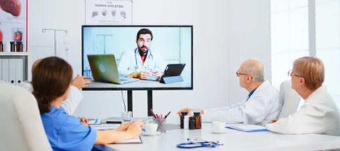
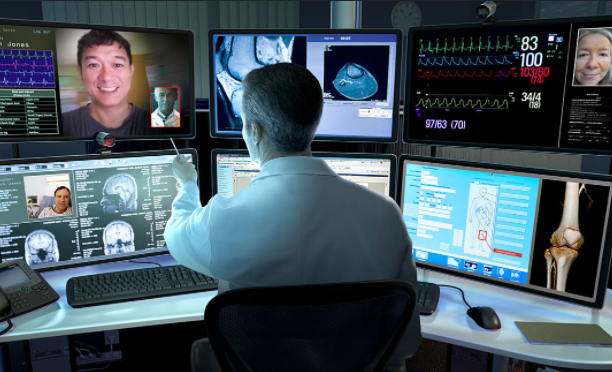

Telehealth connects patients to vital health care services through videoconferencing, remote monitoring, electronic
consults and wireless communications.

Our Services
Telehealth is changing the way health care is provided.
Patient access to routine and specialty care while improving patient satisfaction and outcomes.
Significant growth in the use of telehealth, to the point where more than half of U.S. providers connect with
patients and consulting practitioners through the use of video and other technology.
Coverage, payment and other policy issues prevent full use of telehealth, remote patient monitoring and similar
technologies.

Our Quality
The AHA supports the expansion of patient access created by hospitals’ efforts to deliver high-quality and
innovative telehealth services.
Innovative uses of this kind of technology in the provision of healthcare is increasing.
A range of providers, such as doctors, nurse practitioners, clinical psychologists, and licensed clinical social
workers, will be able to offer telehealth to their patients wit high standards of quality.
There are three main types of virtual services physicians and other professionals can provide, general telehealth
visits, virtual check-ins and e-visits..